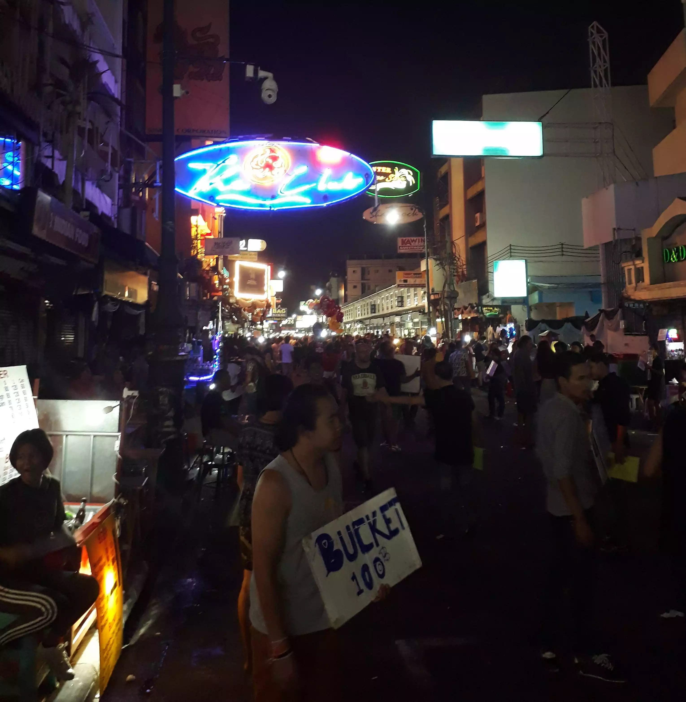

Bangkok: El comienzo
Sí alguien me habría dicho que ahí comenzaba todo, que mi vida estaba por dar un giro de 360 grados, que no volvería a ver las cosas del mismo modo, no lo hubiera creído.
Recuerdo como si fuera hoy, haber dejado atrás a mi familia y estar con Kevin y Guasti haciendo la fila para salir de Argentina, rumbo a lo desconocido. Literalmente desconocido, pero no sabíamos la magnitud del desconocimiento.
Khaosan Road, Bangkok.
Todo lo que llego después fue mágico, me hizo conocer sentimientos que no había experimentado, era libre y tenía dos amigos y el mundo por delante.
Llegamos a Bangkok y Guasti no tuvo mejor idea que olvidarse su bolso dentro del aeropuerto, para luego acordarse de él cuando ya habíamos hecho migraciones. Definitivamente el jetlag estaba haciendo efecto y cuando nos decidimos a ir al departamento que alquilamos, empecé a sentir como si todo era un sueño, las calles tailandesas llenas de rostros, comidas, vestimentas y cultura distintas a la mía, sumadas a un calor agobiante que no me dejaba respirar. Nunca pudimos encontrar nuestro hospedaje y el Uber, cansado de nosotros, decidió dejarnos en la calle.
Todo era surrealista y comenzamos a caminar. El asfalto parecía que se derretía y se nos metía por las zapatillas y absolutamente nadie entendía lo que decíamos. Estábamos perdidos en el medio de un barrio en el corazón de Bangkok. Encontramos un precario kiosko abierto y compramos, sin mediar palabra, unas botellas de agua. Era imposible comunicarse con la dueña, pero mi patriotismo emergió y atiné a mostrarle la bandera de Argentina, esperando que aunque sea diga "Messi, Maradona". Con cara extraña y un gesto de manos, me dejó evidenciado que no sabía que era Argentina. Me sentí chico, por primera vez, me di cuenta que había gente que ni nos registraba, que en ese recoveco de Tailandia no eramos nada y sentirme así, a su vez, lo era todo para mi.
Conseguimos internet en un “Starbucks Thai” y pudimos encontrar la forma de contactarnos con la inquilina para que nos explique como llegar. Lo único que recuerdo de ese bar, era la sonrisa de la chica que atendía, estaba sorprendida de ver latinos ahí dentro.
Luego de llegar al hospedaje y dejar el equipaje, nos fuimos directo al mercado. La combinación de colores y dibujos en los packagings de las góndolas hacían un contexto un tanto psicodélico. Había productos tan extraños que parecían irreales.
Productos tailandeses
Productos tailandeses
La noche llegó y me encontraba en el último piso del departamento, con Kevin, frente a una piscina con vista a la ciudad de Bangkok. Decidí dejar el baño para más tarde y me acomodé en una de las reposeras modernísimas que había. Llevaba más de 24hs sin dormir y estaba extasiado, todo era un sueño real pero definitivamente estaba más despierto que nunca.

Piscina en la terraza del hospedaje en Bangkok.
Ahí estaba, empezando mi nuevo mundo sin saber que en unas semanas Maldivas me iba a hacer sentir más vivo que nunca, que en Perhentian bucearía con rayas y tiburones, que nos perderíamos en la noche de Phuket y en Khao San Road, que lo que más extrañaría era caminar sin rumbo con Kevin y Guasti por las calles de Kuala Lumpur, ni que todo este viaje me motivaría a cambiar mi vida y a abrirme a nuevas experiencias.
Como muchas veces sucede con los principios, no sabemos que están sucediendo hasta que ya sucedieron.
Hace un tiempo encontré el siguiente texto que escribí a pocos meses de haber hecho este viaje. El mismo que me cambió la vida y me motivó a irme solo a Brasil.
Caí. Caí y no me di cuenta. A veces siento que todo es un sueño, que estoy con la cabeza apoyada en un cordón de Bangkok y que el último recuerdo que tengo es una chica hablando en alemán y Kevin comiendo escorpiones.
¿Y que soñaría si estaría en coma y podría elegir qué soñar? Aquella noche en Maldivas, la danza en Aquario, el reencuentro en Parati, aquella charla en el muelle de San Sebastián.
De repente todo me cierra, nada existe, nada de lo maravilloso y extraño que me sucedió en este tiempo, nada de todas estas cosas que jamás pude controlar. Estoy convencido, estoy dormido en Bangkok, voy a despertar y no voy a tener el coraje de cambiar nada.
Desperté y no exististe, ¿O si? Te tengo que buscar y no se en que ciudad. Recuerdo tu acento, recuerdo tu lengua, pero no en qué idioma hablás. Recuerdo tu mirada, jamás la podría olvidar, recuerdo tu sonrisa, recuerdo tu mente, te recuerdo exististe entonces.
Despierto y estoy con la cabeza apoyada en mi almohada, un cordón de goma espuma. No es Bangkok, no es Maldivas, no es San Sebastián, no sos vos y tampoco se si soy yo.